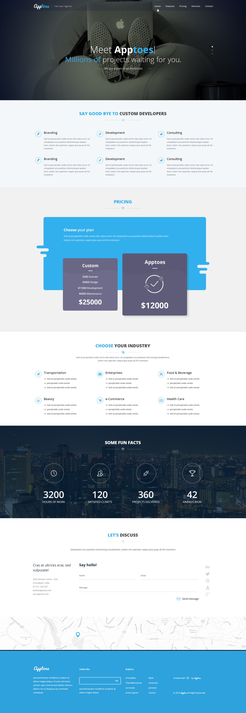

A focused first impression
The hero uses a short studio introduction over a subdued photographic background.
An original website layout combining a dark photographic hero, services, and supporting product information.

Website UI design
1 curated images
Studio introduction
Original design exports
An original website layout combining a dark photographic hero, services, and supporting product information.
Original design exports supplied from the project archive.
Tap any image to explore the original in detail.
A retrospective design analysis based on the preserved screens.
The hero uses a short studio introduction over a subdued photographic background.
The lighter content area separates the service offering into smaller blocks.
Moving from dark hero to light content gives the long page a clear visual opening.
A newly reconstructed wireframe study showing the hierarchy and content groups visible in the finished work.
Created for this portfolio from the final designs. This is a retrospective reconstruction, not evidence of original research, testing, or wireframing.
Let’s start with one clear idea and a free design preview for your business.
Talk to Vijay on WhatsApp ↗vijay.design360@gmail.com ↗